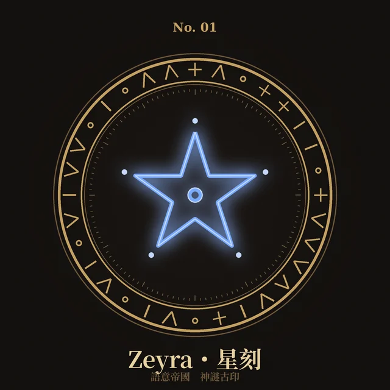

Semantic Empire: GodSeal · 16 枚擁有語意能量的符印 · 創作者 KY · Base ERC-721

在失落的幽沙古域中，古文明遺留下名為「神謎文」的語言系統，每個符印象徵一種宇宙力量。語言本身即為能量，透過符印的語法拼組可觸發召喚、封印、轉化等效果。
《語意帝國：神謎古印》是一個結合語言哲學與圖騰藝術的 NFT 系列。透過「語言即能量」的系統架構，神謎古印不僅是數位收藏品，更是語意宇宙的一部分。
本系列的設定、命名與語法功能由創作者 KY 於 2025 年 9 月製作並封存雜湊。任何人都可以下載原始檔案，自行計算 SHA-256 與下表比對。
| 提案書原件（.docx）SHA-256 | e65e1ebb79b38a24e738ac0710b8a26742aa576badc741eeb8ae665a1dbd8c9a |
| 存證紀錄 | KY NFT Attestation P1 · 2025-09-15 |
| IPFS 資料夾 | bafybeieqhfbhufbb5t4ncb2b23t4sdkdd4xzkaaxcyq7sbyyqsfvwjoraa |
| 原始圖檔 | 每枚卡片的圖片連到 IPFS 上的 1024×1024 原檔；雜湊清單見 IPFS 資料夾內 godseal_SHA256.txt |
| 鏈 | Base（ERC-721，Manifold Creator 合約） |
| 合約地址 | 0x20e787b876cb39357dd5f7dfba624bacf596fc59 |
| 部署交易 | 0x338d7758ca331410cd7ee2332b347387396a0ee8817aaa993bf58d486312823c |
| 發行日期 | 2026-11-20 · 共 16 枚（Token #1–#16） |
| 存證檔雜湊上鏈 | KY_NFT_Attestation_20250915.yaml（SHA-256 1368e04da3039fb45362aa8116608278b5b81e5f6aed09c3dcf90357e83b38a7）於 2026-11-20 寫入 Base：0x103bacc99c671cd912228a00f57b9b2108c98ebca57828b20c9054c1ca7fb5b9 |
| 比特幣時間戳 | 同一份存證檔（SHA-256 1368e04d…38a7）已透過 OpenTimestamps 錨定至比特幣區塊鏈（2026-11-20 送出）。證明檔：KY_NFT_Attestation_20250915.yaml.ots，可在 opentimestamps.org 搭配原始存證檔驗證。 |
| 授權 | © KY 保留所有權利 |